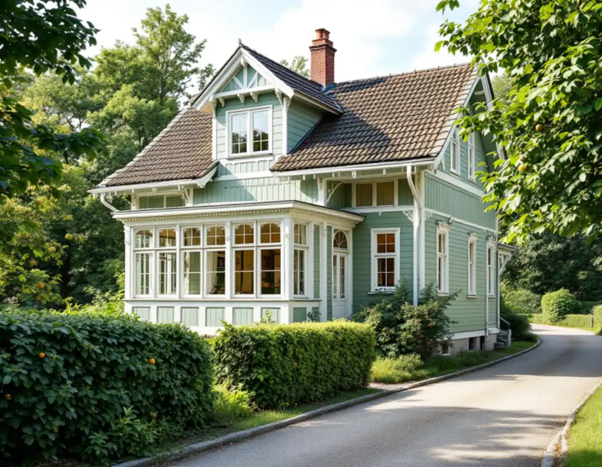
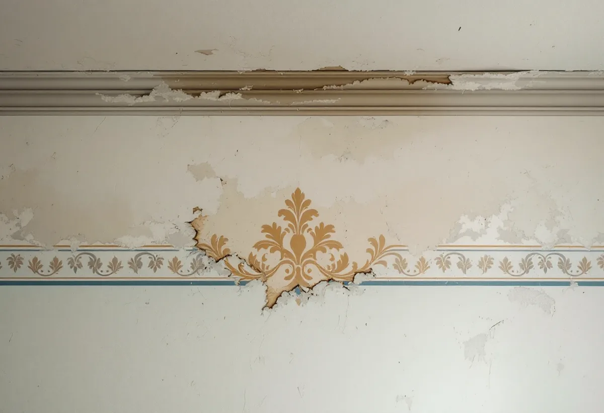
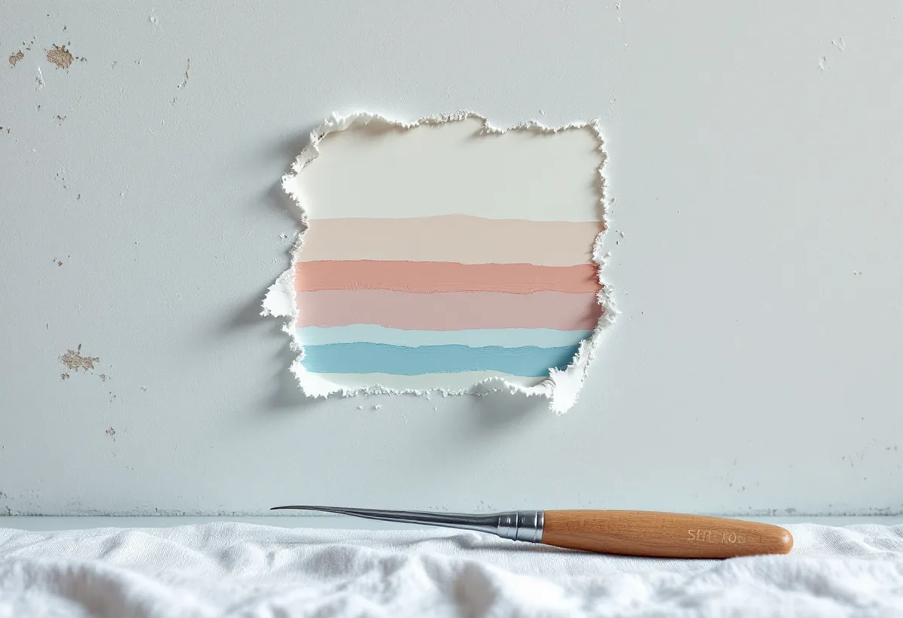

Platsbesök
Vi tittar på väggarna och lyfter en hörnbit för att se vad som finns under.

Älvsjö villastad växte fram när Älvsjö var ett eget municipalsamhälle, och i de äldre husen dyker det ibland upp målade bårder och dekor när gamla tapeter tas ner.
Beskriv jobbet kort.
Något blev fel. Kontrollera uppgifterna eller ring 08 12 410 276.
Vi tittar på jobbet på plats innan du får offert.
Du ser vad som ingår och vad det kostar.
Vi drar av ROT direkt och sköter ansökan.
Geal Entreprenad AB, Bromma. Org.nr 559303-7566.

Geal Entreprenad AB tapetserar i villor och lägenheter i Älvsjö och tar hand om sådana fynd innan något nytt kommer upp.
Stockholms stads vägledning Varsam utveckling av småhus- och villaområden berättar att små stationssamhällen uppstod när järnvägen byggdes ut. På 1910-talet blev några av dem municipalsamhällen med egen administration och beskattningsrätt, och Älvsjö är ett av exemplen.
I Älvsjö villastad togs stadsplanen fram av Per Olof Hallman enligt samma grundprinciper som hans planer för den tidiga trädgårdsstaden. I vägledningens tabell är delar av Älvsjö markerade som kulturhistoriskt värdefull miljö. I villastäderna var trä det dominerande fasadmaterialet, och glasverandor, takkupor och snickarglädje gav husen deras variation.

Under tapeterna i en äldre villa kan det finnas en handmålad bård eller ett väggfält. Svenska Byggnadsvårdsföreningen påpekar att målarna ofta var aktiva lokalt och att regionala stilar var vanliga. Den som vill veta mer om en bård kan ta kontakt med länsmuseet eller närmaste hembygdsförening.
Vi stannar upp när vi hittar något sådant. Bården fotograferas och mäts, och du får välja om den ska sparas synlig, byggas in bakom den nya tapeten eller återskapas. Ingenting tas bort innan du har bestämt dig, eftersom en riven bård inte går att få tillbaka.
Byggnadsvårdsföreningen svarar på en fråga om dekor i putsen att det enda sättet att ta reda på hur den såg ut är att provskrapa försiktigt med en skalpell eller vass kniv. Föreningen tipsar också om att fråga grannarna om de har liknande dekor.
Färgen man hittar behöver inte vara den ursprungliga nyansen. Den kan ha blivit sliten eller smutsig, och linoljefärg gulnar i mörker men återfår sin nyans när den får dagsljus en tid. Ett skrapprov ger ändå en god bild av vilka färgskalor det rör sig om.
När bården ska vara kvar synlig tapetserar vi fram till den och skär kanten rakt. Ska den byggas in sätter vi ett skikt makulatur över, så att den går att ta fram igen. Ska den återskapas tar du hjälp av en dekorationsmålare med skrapprovet som förlaga.
Valet av tapet styrs av rummet: en lugn tapet låter en bevarad bård synas, medan ett rum utan dekor tål mer mönster. Om målning av väggar och tak i Älvsjö kan du läsa under målare i Älvsjö.
Ny tapet inomhus kräver inget bygglov. Stadsmuseets klassificeringskarta ger ändå en bild av husets värde, och i ett blått eller grönt klassat hus är det extra viktigt att fasta inredningsdetaljer tas om hand.
Ska golven slipas eller fönstren renoveras samtidigt planerar vi ordningen så att det dammiga arbetet görs först. Läs mer under golvslipning i Älvsjö.
Vi tittar på väggarna och lyfter en hörnbit för att se vad som finns under.
Underarbete, eventuell dekor och tapetsering står för sig.
Golv, lister och snickerier täcks.
Gamla lager tas ner, och fynd dokumenteras innan vi går vidare.
Ny tapet sätts upp runt eller över bevarad dekor.
Vi lämnar restbitar och bilder på det vi hittade.
Skatteverket räknar tapetsering inomhus som rotarbete i den bostad du äger och själv använder. I en bostadsrätt gäller avdraget arbete inne i lägenheten som du ansvarar för.
Avdraget är högst 30 procent av arbetskostnaden, högst 50 000 kronor per person och år och högst 75 000 kronor tillsammans med rutavdrag. Tapet, klister och resor ger inget avdrag. Geal drar av beloppet direkt på fakturan.
Antalet rum, hur många lager som ska ner och om dekor ska sparas eller byggas in. En överblick finns under målare. Efter ett gratis platsbesök får du ett skriftligt kostnadsförslag.
Fasad, fönster och invändig målning.
Målare i Stockholm →Takbyte, takbesiktning och plåtarbeten.
Takläggare i Älvsjö →Långbro, Herrängen och Långsjö.
Takrenovering i Älvsjö →Villatomten, prickmarken och vattnet.
Attefallshus i Älvsjö →Villorna, träbjälklaget och golvvärmen.
Badrumsrenovering i Älvsjö →Byggrätt, gamla planer och planändring.
Byggföretag i Älvsjö →Puts nedtill, panel upptill.
Fasadmålning i Älvsjö →Villastad, nya grannhus och puts på trä.
Fasadrenovering i Älvsjö →Fönster och tilläggsisolering.
Fönsterbyte i Älvsjö →Småspröjs och fönsterluckor.
Fönsterrenovering i Älvsjö →Golvvärme under trägolv i äldre villor.
Golvläggare i Älvsjö →Slipa och ge golvet en ny kulör.
Golvslipning i Älvsjö →Villastad, flerlägenhetsvillor och kök i lager.
Köksrenovering i Älvsjö →Villastad, egnahem och småstugor i Älvsjö.
Målare i Älvsjö →Plåttak för solceller, kupor och verandor i Älvsjö.
Plåtslagare i Älvsjö →Staket, grind och plank i villastaden.
Snickare i Älvsjö →Vinden, kupan och byggrätten.
Takbyte i Älvsjö →Byggrätt, trädgårdssida och volym.
Tillbyggnad i Älvsjö →Villastaden, elen och köket.
Totalrenovering i Älvsjö →Eller ring 08 12 410 276, mån–fre 08–17.
Beskriv jobbet kort.
Något blev fel. Kontrollera uppgifterna eller ring 08 12 410 276.